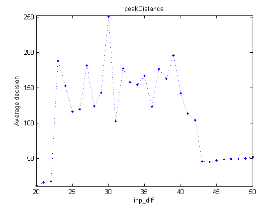

Parameterscans
Die DFT-Toolbox erlaubt das einfache "abscannen" festgelegter Parameterbereiche und die individuelle Auswertung der Daten. Die hierzu nötigen Funktionen werden hier vorgestellt.
Contents
Parameter-Structure-Arrays
Zum Abscannen von Parameterbereichen wird ein Array von Parameterstructures verwendet. Ein solches Array kann mit der Funktion paramsArray() erstellt werden. Diese Funktion erwartet eine "template"-structure, einen zu scannenden Parameter und den Parameterbereich als Eingabe. Alle Einträge des entstehenden Arrays werden sich nur im zu scannenden Parameter vom "template" unterscheiden. Bei jedem Eintrag wird dabei der zu scannende Parameter auf einen Wert des Parameterbereichs gesetzt.
Ausgehend vom Template
params = stdParams1L();
kann so z.B. ein Array von Parameterstructures erstellt werden, deren Einträge sich nur im Feld 'inp_diff' (Stimulusdistanz) von params unterscheiden:
array = paramsArray(params, 'inp_diff', 0:10)
array =
1x11 struct array with fields:
layers
InteractionKernelParams
w_exc
w_inh
w_inh_glob
sig_exc
sig_inh
InputParams
inp_pos
inp_str
inp_sig
inp_inh
inp_diff
GeneralParams
h_level
threshold
tau
beta
noise_str
n_runs
n_timesteps
n_prerelax_steps
n_command_on
n_fieldsize
BooleanParams
UseSigNoNeg
Das Ergebnis ist ein Array mit 11 Parameter-structures mit aufsteigenden Stimulusdistanzen von 0 bis 10. Durch eine andere Formulierung des Parameterbereichs kann auch die "Schrittweite" verändert werden:
array = paramsArray(params, 'inp_diff', 0:0.1:10)
array =
1x101 struct array with fields:
layers
InteractionKernelParams
w_exc
w_inh
w_inh_glob
sig_exc
sig_inh
InputParams
inp_pos
inp_str
inp_sig
inp_inh
inp_diff
GeneralParams
h_level
threshold
tau
beta
noise_str
n_runs
n_timesteps
n_prerelax_steps
n_command_on
n_fieldsize
BooleanParams
UseSigNoNeg
gibt also 101 Parameter-structures zurück, bei denen die Stimulusdistanz von 0 ind 0,1-Schritten bis 10 ansteigt. Auch hier sind alle anderen Simulationsparameter identisch zu denen im "template".
Abscannen von Parameter-structure-Arrays
Die Funktion scanParamsArray() verarbeitet ein Array von Parametersätzen und Untersucht die Ergebnisse. Als Argumente erwartet die Funktion das zu untersuchende Array, die Anzahl an durchläufen pro Parameter-Structure und die Funktion, die das jeweilige Feld bewerten soll.
Die Ordner "decisions" (siehe Entscheidungen) und "characteristics" (siehe Characteristische Werte) stellen Funktionen zur Verfügung, die jedem Feld eine Maßzahl zuordnen, die auf seine Beschaffenheit schließen lässt. In diesem Beispiel verwenden wir die Funktion peakDistance(), die den Abstand der Maxima der Neuronenantwort berechnet. Für genaue Beschreibungen aller möglichen Funktionen siehe die Funktionsreferenz der jeweiligen Ordner.
Wir übergeben der Funktion scanParamsArray also das Array array, die Anzahl durchläufe pro Array-Element n und die Bewerterfunktion in Form eines functionhandlers (in MatLab® als "@function" definiert). Die Funktion simuliert nun n mal pro Element von array und übergibt die entstehende field-Structure an die Bewerterfunktion, deren (pro Durchlauf gemittelte) Antwort am Ende geplottet wird.
array = paramsArray(params, 'inp_diff', 20:50);
scanParamsArray(array, 3, @peakDistance);
Processed inp_diff 20, mean value was 12.3333 Processed inp_diff 21, mean value was 16.3333 Processed inp_diff 22, mean value was 18 Processed inp_diff 23, mean value was 188 Processed inp_diff 24, mean value was 152.6667 Processed inp_diff 25, mean value was 116.3333 Processed inp_diff 26, mean value was 119.6667 Processed inp_diff 27, mean value was 181.6667 Processed inp_diff 28, mean value was 124 Processed inp_diff 29, mean value was 143 Processed inp_diff 30, mean value was 250.6667 Processed inp_diff 31, mean value was 103 Processed inp_diff 32, mean value was 177.6667 Processed inp_diff 33, mean value was 157.6667 Processed inp_diff 34, mean value was 154.3333 Processed inp_diff 35, mean value was 167.3333 Processed inp_diff 36, mean value was 123.3333 Processed inp_diff 37, mean value was 177 Processed inp_diff 38, mean value was 162.6667 Processed inp_diff 39, mean value was 196 Processed inp_diff 40, mean value was 142.3333 Processed inp_diff 41, mean value was 113.6667 Processed inp_diff 42, mean value was 104.6667 Processed inp_diff 43, mean value was 46.3333 Processed inp_diff 44, mean value was 45.6667 Processed inp_diff 45, mean value was 47.3333 Processed inp_diff 46, mean value was 48.6667 Processed inp_diff 47, mean value was 49.3333 Processed inp_diff 48, mean value was 49.6667 Processed inp_diff 49, mean value was 50 Processed inp_diff 50, mean value was 52.6667
Die entstehende Figure zeigt nun die durchschnittliche Bewertung des Feldes (in diesem Fall durch peakDistance() ) in Abhängigkeit vom zu scannenden Parameter. Zusätzlich gibt die Funktion noch eine Matrix zurück, die die durchschnittlichen Entscheidungswerte enthält (zur Erstellung von Wertetabellen oder weiterer Plots):
ans
ans = 12.3333 16.3333 18.0000 188.0000 152.6667 116.3333 119.6667 181.6667 124.0000 143.0000 250.6667 103.0000 177.6667 157.6667 154.3333 167.3333 123.3333 177.0000 162.6667 196.0000 142.3333 113.6667 104.6667 46.3333 45.6667 47.3333 48.6667 49.3333 49.6667 50.0000 52.6667
An scanParamsArray() können beliebig viele Bewerterfunktionen übergeben werden. Alle übergebenen Funktionen bewerten dabei dieselben Felder. Für jede Bewertungsfunktion wird am Ende ein eigener Plot erstellt.
Beachte: scanParamsArray() gibt bei zwei-Schicht-Modellen nur die "U"-Schicht (die excitatorische Schicht) an die Entscheidungsfunktion weiter.
Mögliche Bewertungsfunktionen
Als Bewertungsfunktion akzeptiert scanParamsArray() jede Funktion, die mit einer field-structure als einziges Argument aufgerufen werden kann. Dies gilt insbesondere für alle Funktionen aus den Ordnern charakteristics(), decisions und auch plot, wobei letztere für jedes Feld die Bewertung "0" ausgeben, aber ihren entsprechenden Plot des derzeitigen Felds erstellen.
Prinzipiell kann jede selbst erstellte Funktion, die das Schema
function result = Bewertung(field)
erfüllt, als Bewerterfunktion verwendet werden.